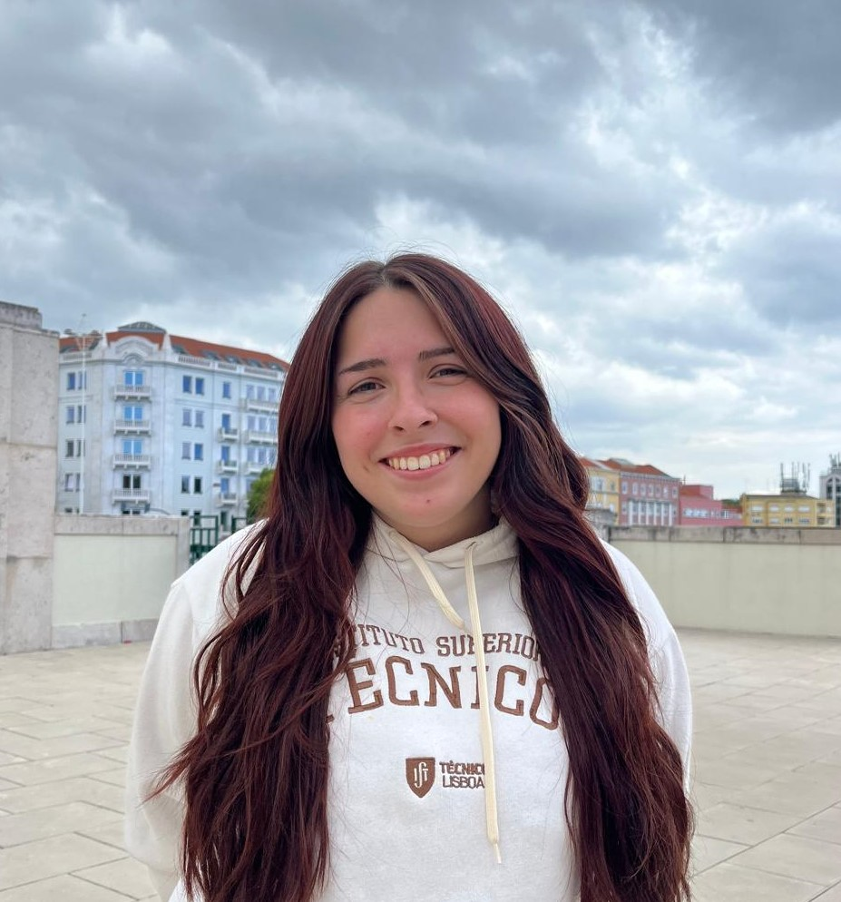

<style>
  body {
    font-family: 'Helvetica Neue', sans-serif;
    line-height: 1.6;
    max-width: 800px;
    margin: 0 auto;
    padding: 2rem;
    background-color: #fefefe;
    color: #222;
  }

  header {
    text-align: center;
    margin-bottom: 3rem;
  }

  header h1 {
    font-size: 2.5rem;
    color: #e74c3c;
  }

  h2 {
    border-bottom: 2px solid #eee;
    padding-bottom: 0.3rem;
    color: #333;
  }

  section {
    margin-bottom: 2.5rem;
  }

  a {
    color: #e67e22;
    text-decoration: none;
  }

  a:hover {
    text-decoration: underline;
  }
</style>

<header>
  
  <h1>Hi, I’m Joana Peixinho</h1>
  <p>Computer Science & Engineering student at Instituto Superior Técnico</p>
  <p>Driven by curiosity, product thinking, and purposeful innovation.</p>
</header>

<section id="about">
  <h2>🎯 About Me</h2>
  <p>I’m a Master's student in Computer Science and Engineering, with a strong technical foundation and a vision that goes beyond programming. I'm passionate about building impactful digital products, leading teams, and solving real-world problems through technology.</p>
  <p>Outside of tech, I’m deeply interested in politics, feminist movements, and music — which has been a creative influence on how I think and work.</p>
</section>

<section id="projects">
  <h2>💻 Projects</h2>
  <ul>
    <li>
      <strong>Web Development Projects</strong> – From simple interfaces to more dynamic applications, I enjoy designing and building user-centered web experiences.
    </li>
    <li>
      <strong>Agile Collaboration</strong> – Participated in cross-functional development during my Decathlon internship, contributing to real company website features.
    </li>
    <li>
      <strong>Academic Projects</strong> – Built multiple systems throughout my B.Sc. program in languages like Java, Python, and C++.
    </li>
  </ul>
</section>

<section id="experience">
  <h2>🏢 Experience</h2>
  <p><strong>Summer Intern – IT Team, Decathlon Portugal</strong></p>
  <p>Worked on a company website, developing features in a collaborative environment and learning agile practices in a real-world context.</p>
</section>

<section id="skills">
  <h2>🛠️ Skills</h2>
  <p><strong>Programming:</strong> Python, Java, JavaScript, C, C++, PHP, SQL</p>
  <p><strong>Soft Skills:</strong> Leadership, Creativity, Time Management, Team Motivation</p>
  <p><strong>Languages:</strong> Portuguese (Native), English (Fluent), Spanish (Intermediate)</p>
</section>

<section id="contact">
  <h2>📬 Contact</h2>
  <p>Email: <a href="mailto:joana.peixinho@tecnico.ulisboa.pt">joana.peixinho@tecnico.ulisboa.pt</a></p>
  <p><a href="https://github.com/joanapeixinho" target="_blank" style="display:inline-block; padding:10px 20px; background:#e67e22; color:white; border-radius:5px;">Visit My GitHub</a></p>
</section>
